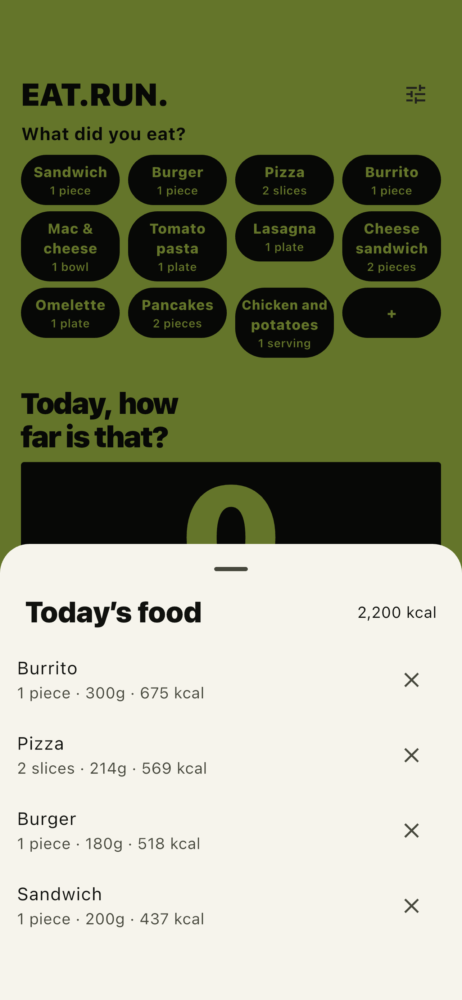

- 한국어/영어 최신 실제 화면을 첨부하고 위 조작 명칭과 대조. - QT는 수정본 출시 확인 후 재진입 개선을 언급. - 커뮤니티에는 글 전체를 반복 투고하지 않고 해당 규칙과 실제 질문에 맞춰 편집. - 웹 게시 위치·최종 링크·완성 화면이 준비된 시점에 소유자 게시 승인 요청. - 영상은 위 자막 원고만 준비된 상태. 새 영상 파일 제작 완료로 표현하지 않음.
Download on the App StoreFree with ads
먹빼 / EAT.RUN. / iPhone · iPad
- 한국어/영어 최신 실제 화면을 첨부하고 위 조작 명칭과 대조. - QT는 수정본 출시 확인 후 재진입 개선을 언급. - 커뮤니티에는 글 전체를 반복 투고하지 않고 해당 규칙과 실제 질문에 맞춰 편집. - 웹 게시 위치·최종 링크·완성 화면이 준비된 시점에 소유자 게시 승인 요청. - 영상은 위 자막 원고만 준비된 상태. 새 영상 파일 제작 완료로 표현하지 않음.
Download on the App StoreFree with ads
